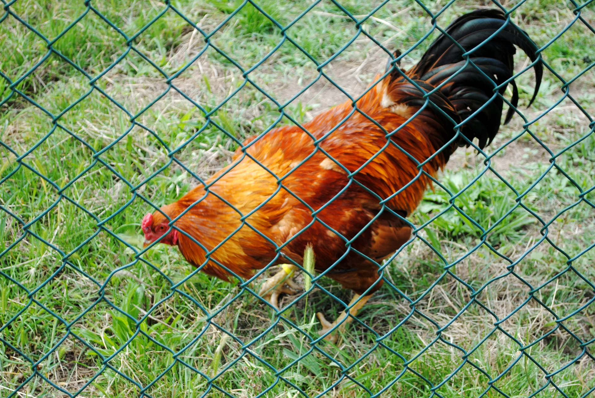
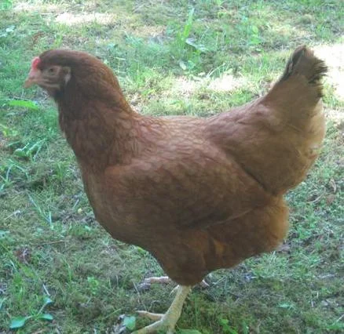

Galiña de Mos: la rubia gallega de Fontefiz

La Galiña de Mos es la gallina autóctona de Galicia, originaria del municipio de Mos (Pontevedra). Es una raza antigua de corral gallego, grande y robusta, de plumaje pardo rojizo, con el gallo rojo dorado: uno de los gallos más vistosos de las razas españolas. Hoy está catalogada como autóctona en peligro y se cría en explotaciones pequeñas y en casas rurales de toda Galicia.
Origen e historia
La Galiña de Mos es la gallina autóctona de Galicia, originaria del municipio de Mos (Pontevedra). Es una raza antigua de corral gallego que estuvo a punto de desaparecer en la segunda mitad del siglo XX, cuando las granjas industriales sustituyeron a las gallinas de aldea. Su recuperación es una historia de conservación: a partir de los años noventa, la Xunta de Galicia, a través del Centro de Recursos Zooxenéticos de Galicia en el Pazo de Fontefiz (Coles, Ourense), reunió los últimos ejemplares y puso en marcha un programa de cría y selección, junto con la Asociación de Avicultores de Raza Galiña de Mos (AVIMOS). Hoy la raza está catalogada como autóctona en peligro y se cría en explotaciones pequeñas y en casas rurales de toda Galicia.
Características físicas
La gallina: ave grande y robusta, de unos 2,5 a 3 kg, de plumaje pardo rojizo, más oscuro en el cuello y la cola, con el pecho de color canela. Tiene el cuerpo ancho, el dorso recto y la cola de tamaño medio. Su cresta es sencilla, de tamaño mediano, con cinco o seis puntas bien marcadas, y las orejillas son rojas. Las patas son amarillas y fuertes, sin plumas, hechas para caminar por el monte.
El gallo: mayor, de 3,5 a 4 kg, de un rojo vivo espectacular: esclavina y manto de color rojo dorado intenso, pecho y vientre más oscuros, y hoces de la cola negras con reflejos verdes. Su cresta sencilla es grande y roja, y su porte es erguido y vigilante. Es uno de los gallos más vistosos de las razas españolas.
Variedades de plumaje
La raza se presenta en una única capa clásica, la rubia o roxa: gallina parda rojiza y gallo rojo dorado con cola negra. No hay variedades de color separadas como en otras razas; la selección se centra en mantener la intensidad del rojo del gallo y la uniformidad del pardo de la gallina, sin manchas blancas.
Puesta
Pone en torno a 150–180 huevos al año, de color marrón claro y tamaño grande. Es una puesta moderada pero constante, con buena persistencia en invierno para una raza campera. La gallina es buena clueca y buena madre: saca adelante a sus pollitos sin ayuda y los defiende con decisión.
Carácter
Tranquila, mansa y confiada: es una de las razas españolas más dóciles, se acostumbra al cuidador y se deja coger sin demasiado esfuerzo. El gallo es protector pero no agresivo, y canta con un timbre grave. Es una gallina de aldea, hecha para vivir suelta alrededor de la casa, y se adapta bien a la presencia de niños y de otras aves.
Cuidados, alimentación y alojamiento
Es una raza rústica de clima atlántico: soporta bien la lluvia y el frío húmedo de Galicia, pero necesita un gallinero seco donde refugiarse, con buena ventilación para que no se condense la humedad. Como es grande y campera, necesita mucho espacio —al menos 5 m² de prado por ave— y agradece árboles o arbustos donde cobijarse. Come pienso de puesta, grano y lo que encuentre en el campo: hierba, lombrices, castañas caídas y restos de huerta. Es una gran aprovechadora del terreno, ideal para sistemas de pastoreo con frutales o viña. Conviene vigilar la muda de otoño, en la que pierde puesta y necesita más proteína.
Para qué sirve
Es una raza de doble aptitud: se cría por sus huevos grandes y por su carne, un pollo de crecimiento lento y sabor excelente, muy valorado en la cocina gallega (el tradicional «pollo de Mos» o «galo de curral»). También es una raza de conservación: criar Mos es mantener vivo un patrimonio genético gallego, y su imagen es un atractivo para granjas de turismo rural y venta directa.
Curiosidades
La raza toma el nombre de Mos, el pueblo pontevedrés donde se conservaron los últimos ejemplares; su recuperación se hizo desde el Pazo de Fontefiz, un pazo del siglo XVIII convertido en centro de conservación de razas gallegas; y el gallo de Mos, con su rojo dorado, es uno de los más fotografiados de las razas autóctonas, aunque —como se ve en esta ficha— casi siempre aparece tras una valla, porque los ejemplares de Fontefiz viven en recintos de conservación.
Fotos de la raza

Foto de grupo pendiente: no existe ninguna foto de grupo de Galiña de Mos con licencia comercial; hay que pedirla a la Asociación de Avicultores de Raza Galiña de Mos (AVIMOS).
Fotos y licencias
Las fotos de esta ficha son fotografías reales con licencia libre de uso comercial. La licencia CC BY-SA 3.0 exige atribuir al autor y compartir las adaptaciones bajo la misma licencia. Las fotos se publican en WebP a partir de los originales, con su autor y su licencia.
- Gallo (foto principal): HombreDHojalata — CC BY-SA 3.0.
- Gallina: Lala Lugo — CC BY-SA 3.0.


Fuentes
Datos raciales contrastados con el catálogo oficial de razas del Ministerio de Agricultura, Pesca y Alimentación: Galiña de Mos — datos morfológicos (MAPA). La recuperación de la raza la impulsan la Xunta de Galicia, desde el Centro de Recursos Zooxenéticos de Galicia en el Pazo de Fontefiz, y la Asociación de Avicultores de Raza Galiña de Mos (AVIMOS).
Prepara tu lote y tu gallinero
Antes de comprar aves, calcula el espacio que necesitas, lo que costará alimentarlas y cuándo tendrás los primeros huevos.
Comprueba la normativa local: algunas zonas exigen registrar las aves o avisar al ayuntamiento. Revisa las normas de tu municipio antes de criar.